MY DESIGN PROCESS
I've adopted the non-linear design thinking model from the Hasso Plattner Institute of Design (Stanford University)
BACKGROUND & OVERVIEW
E-commerce merchants and marketeers are often held back from having more product sale conversions by utilising inferior quality data feeds, and while many are generally aware the problem exists, they often don't know how or where to take action.
WakeupData is a startup IT company which specialises in optimising data feeds for Google Shopping Ads, Facebook Dynamic Ads, Amazon, and hundreds of other channels. Customers range from sole traders to large conglomerates (eg. Salling Group), in a variety of industries (fashion & apparel, outdoors, supermarket & household goods). Their goal is to improve customers' ROI by increasing the visbility of their products in online stores.
THE PROBLEM
The company's web-based WakeupData Hub allows customers to control their data feeds centrally and deploy variations to different channels, but a complication was idenitified by the Chief Technical Officer (CTO). Essentially, because WakeupData Hub supports data feeds of various formats and purposes, their was no means to give the user detailed insights into what changes specifically would improve their data quality - a key ingredient in improving various business metrics, such as click through rate, and ultimately product sales.
With Google Shopping feeds controlling 28.9% of the market in 2020, and Amazon in second with a 10.3% share, the CTO decided that the ideal technical solution was to build an application that specifically catered to Google Shopping feeds. This would provide the flexibility required to give users specific, well informed suggestions on what changes to make to their data feeds. This would significantly reduce the barrier of entry for users to intervene with their own data and remove a reliance of some customers on WakeupData's Customer Success manager's to micromanage their feeds no their behalf - a significant operational cost.
WHO IS THE USER?
Preliminary Research
I conducted interviews with 22 existing WakeupData customers, with questions aimed at identifying painpoints with the Hub application and gaging their enthusiasm at some of the ideas for the new application. The interviewees were selected based on filling one or more key criteria:
One factor that became clear was that while larger organisations often have in house teams specifically dedicated to micro managing their data feeds, or outsource their feed management to external agencies, it is is a luxury that is often outside the budget scope of smaller customers, such as start ups or independent sellers. In all cases however, their primary interest is improving the visibility of their own product listings to improve sales. They may have more than one sales category, ranging from clothes, to electronics, to books, and beyond. The interviews revealed a number of valuable insights:
"I want to improve my return on investment by getting the absolute maximum out of my ad spend"

"I have no overview of why one product sells better than the other"
"It's not immediately obvious how I can improve the visibility of my products"
"There's no simple, straight forward way for me to compare the pricing in my product feed against other products in the market"
With this in mind, I drafted a number of personas, exploring the extremities of our potential user base for this new digital solution. I used Timothy's persona (independent seller) as the primary persona to navigate the project design decisions.
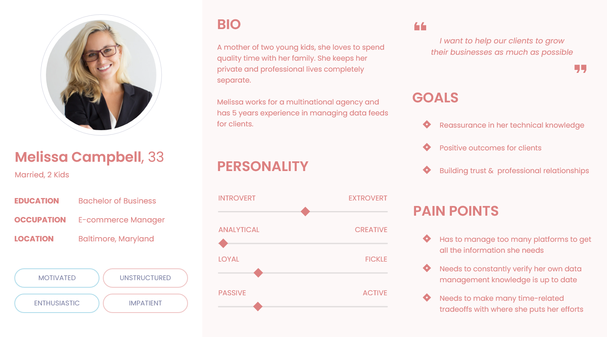
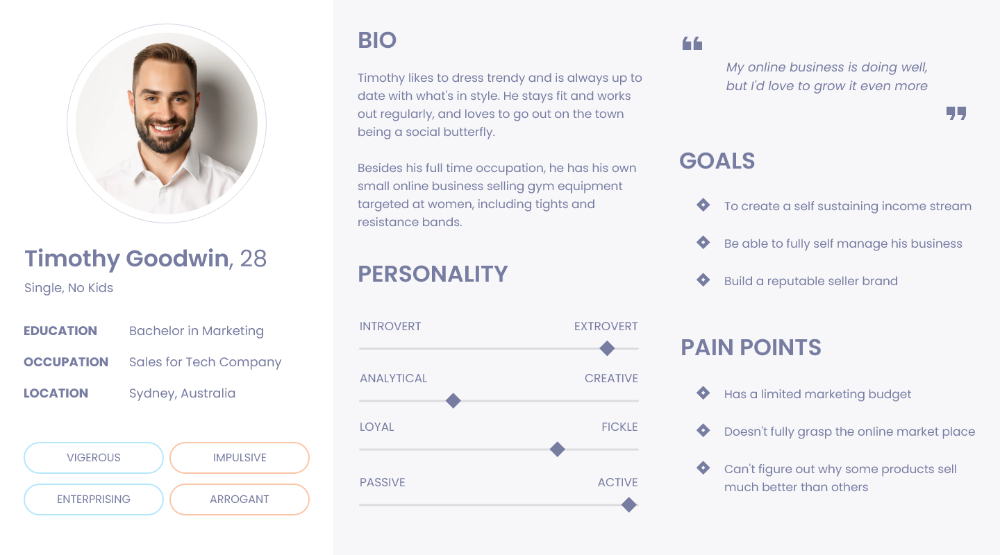
DESIGN
An important product stakeholder had proposed the application use a unique product name irrespective of WakeupData. The entire product team had a brainstorming session where each member presented names, and everyone would vote for their top 3, with the name getting the most votes nominated for at least a prototype. The name that was selected by the team was 'WiseMetrics'.
I began playing with some different logo ideas while one of the other designers started moodboarding:
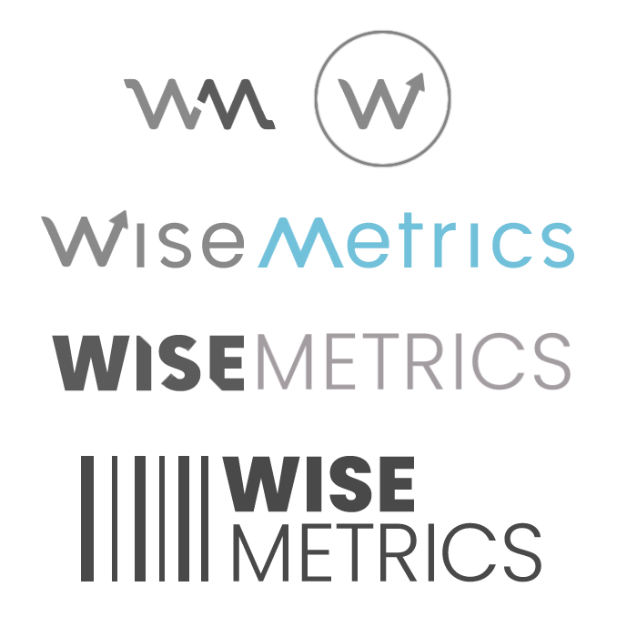
Initial wireframes & mockups
My fledgling design considerations revolved around two aspects - the inital data integration and sign up process (ie. onboarding) I'd discussed and had outlined with the CTO, and how the application would look and behave in a general sense (design system).
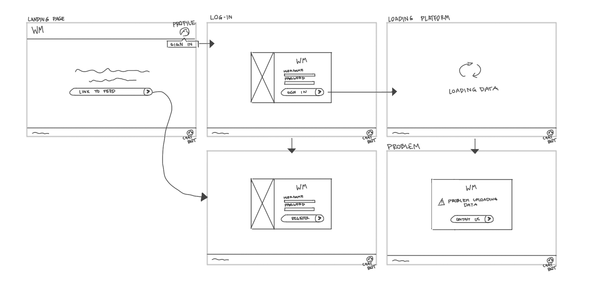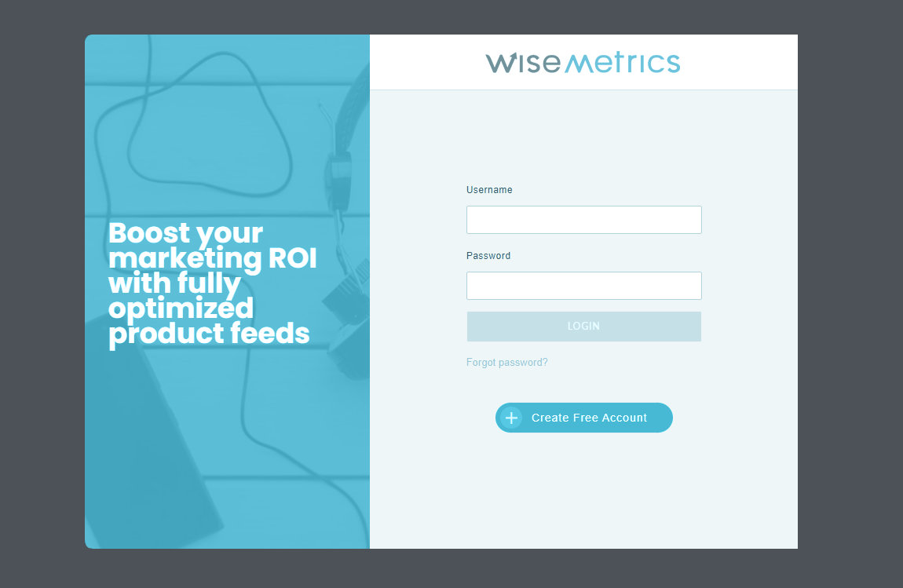
I wanted to try and make a connection to the design template for WakeupData Hub, by laying out core components (eg. header, breadcrumb trail, sub-navigation, user setting controls) in similar or the same locations. The intended affect was to reflect tropes in our software to our existing users, such that if they were Hub users, they would inherently understand some of the new apps interface.
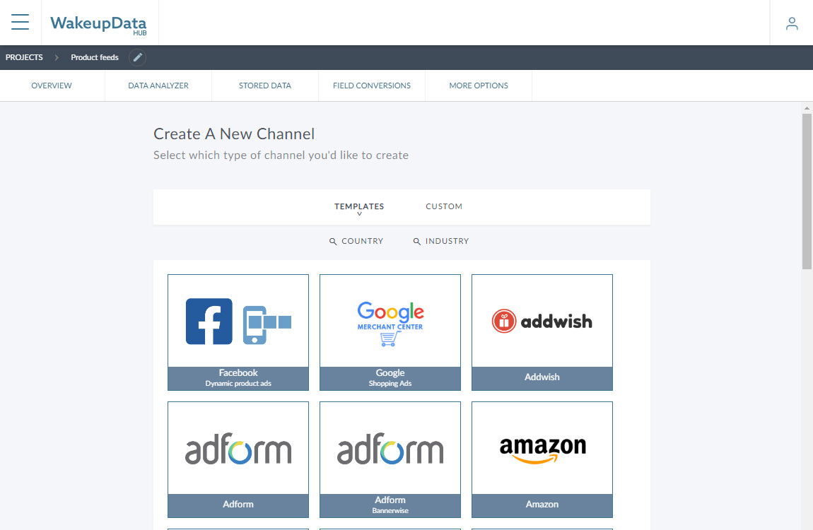
I produced a rough wireframe using the wireframing tool Draw.io for the 'suggestions' page of WiseMetrics. This would be the primary view that the user would see at least once on every visit.
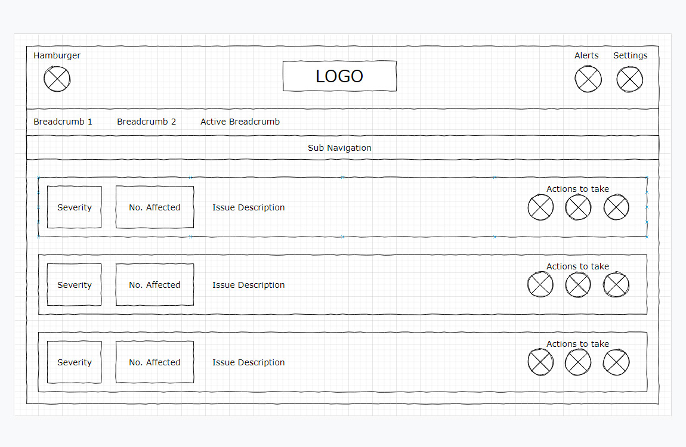
I then decided to produce a higher fidelity mockup of the 'suggestions' page to present to stakeholders, to give them a better impression of how the finished application might look. An important piece of feedback I received from the enginerring team was to have a visualise the asynchronous process of whether an important was currently in progress, or else the user wouldn't have a clear indication of the state of their data. If they had uploaded a new version of their feed for example, how would they know if they were looking at the old one still, or the new one?
Another important consideration was to ensure that the severity/importance of a suggestion was communicated to the user with more than just a colour, to improve accessibility to colour blind users. I did this by giving each suggestion a star rating out of 5, that also tracked half intervals (splitting suggestions on an 11 point scale).
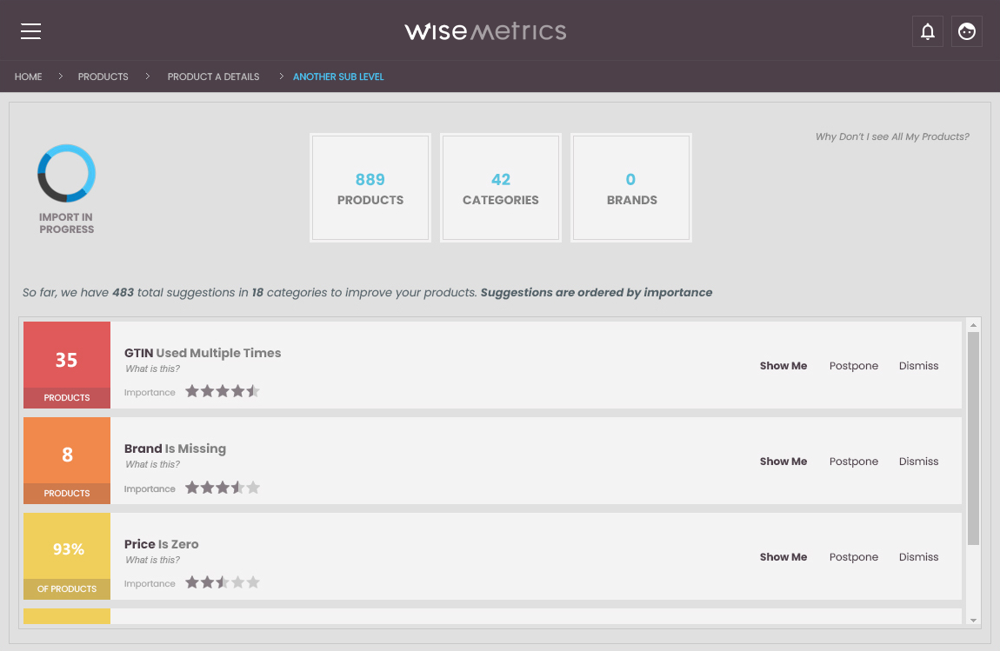
Mapping User Flows
After having dicussions with the software engineering team, I produced two technically feasible user flows based on the most common tasks that the primary user would want to undertake in the application:
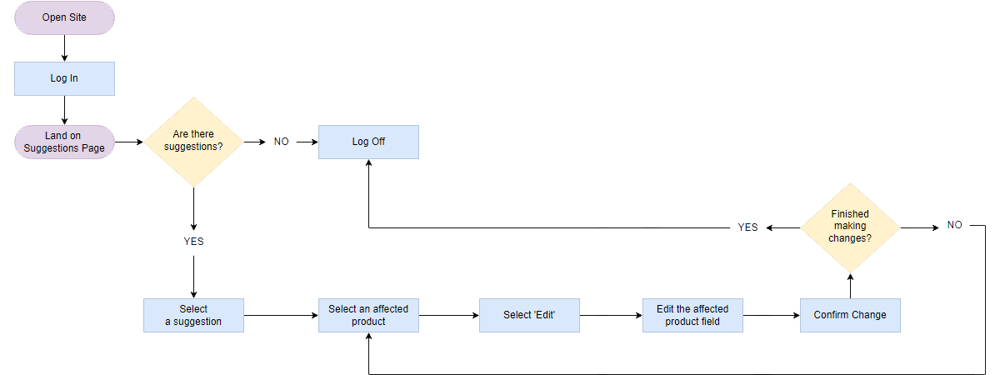
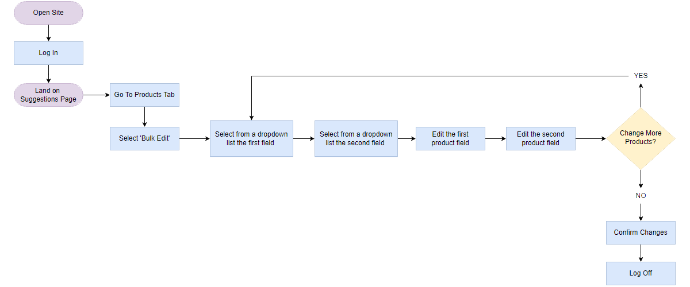
Next I wanted to produce some wireframe / workflow mockups based on these user flows:
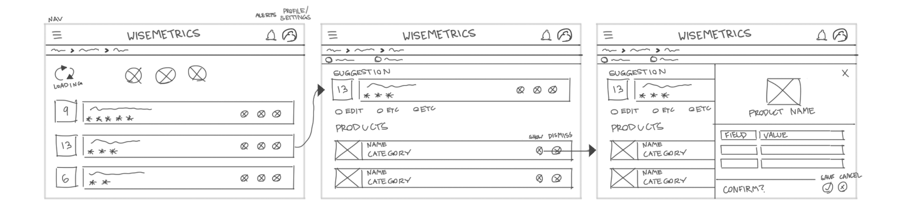Testing Interactive Mockups
I followed up with a number of our customers from the preliminary research who had been open to participating in a usability testing session. I wanted them to undertake a quick 5 step process to see if they could successfully complete a common workflow - 'making a change to a product with a highlighted issue'.
This was achieved with an Adobe XD interactive mockup deployed via a shareable link, and watching the user undertake the activity on Google Meet. I also recorded the testing sessions for review. Test participants were encouraged to verbalise their thoughts and process in trying to figure out the test solution.
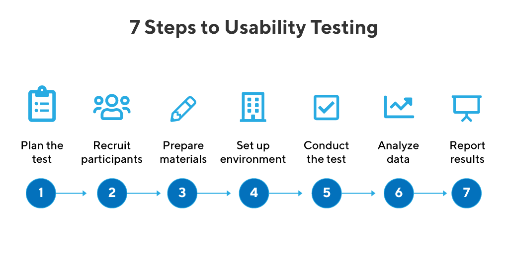
The testing session was largely successful in proving the flow was inituitive, but a frequent point that came up in communication with the users was some general mistaking and confusion about our two products.
"What is WakeupData and what is WiseMetrics? Aren't they the same?"
Design Iterations
It occurred to me that the similarity between the interface layouts had created some unintended sense of ambiguity that might need to be addressed. With the permission of our stakeholders, I took to exploring an alternative version of the main layout controls. This would largely unaffect the established workflows.
I figured, what if we presented the applications as more of a 'yin and yan'? One with a top navigation, the other a side navigation. Perhaps even different colour palette approaches - soft colours vs high contrast colours, full-size logo vs iconised logo, a more conventional layout vs more dynamic. This fed also into the concept of building a separate brand from the already established WakeupData.

As with all my application design work, I tested the different colour combinations a user can experience throughout the workflows to assess their readability, and to ensure the application colour scheme would meet the Web Content Accessibility Guidelines (WCAG).
High Fidelity Prototype
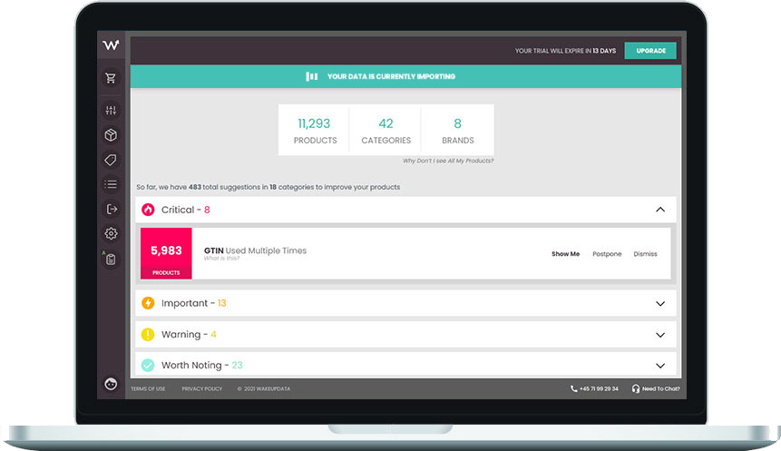
After receiving very positive internal feedback and getting the new design approved by key stakeholders, I went back to some of our users from the previous testing session to get some reassurance on the user side about the new design direction. The common reaction was that the new layout was 'fresher' and 'more futuristic', which our stakeholders were extremely happy about.
I fleshed out the rest of the key workflows in Adobe XD, and then got to work on building the ASP.Net front end code. I was using C# based API calls written by our engineers, and some rough templates they had set up for testing purposes.
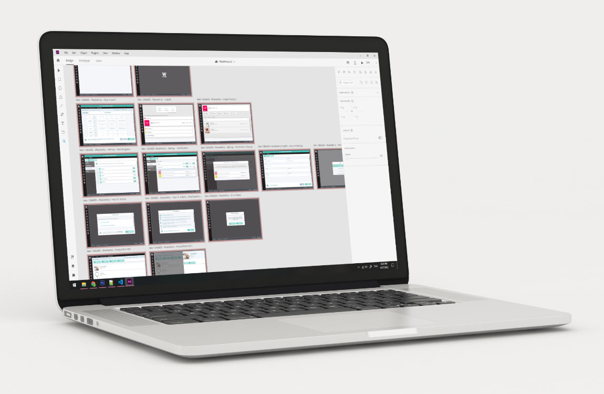
I conducted one final set of user testing, now with a working prototype and some refined (but not fully completed) front end graphics, to test some other workflows, like the user changing which catalog (data feed) they were currently editing, and making some changes in the user settings.
"This is great! When can I get it?"
DELIVERY
So, exactly how did the product ultimately perform for for our customers?
Kaufmann are a fashion and apparel retailer with a wide presence across the Nordics and beyond. They use Google Shopping (Product Listing Ads) for marketing its product catalogs, which contains brands such as Polo Ralph Lauren, Hugo Boss and Tommy Hilfiger. They experienced impressive growth in a year-on-year comparison:
Legeakademiet is an E-commerce store founded in 2005, specialising in children's toys and gear. Similarly, they also experienced significant year-on-year growth:
The ease with which existing and new customers are able to engage with the WiseMetrics platform and comprehend complex tasks through simple workflows is, in my opinion, testament to the strong project planning and communication between the developers and design team on WiseMetrics, and perhaps most importantly, the valuable insights we were able to gain through empathising with our existing customers.